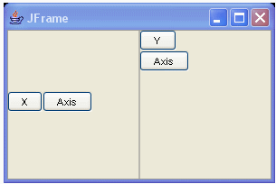

Procedure
This document
tests codegen's removal of unreferenced beans and also tests putting
beans on the freeform.
Codegen currently models every
bean. After decoding the document it removes unreferenced beans.
Referenced beanParts are
those which:
- Have
modelled=true in the overrides or
is this bean.
- Have
modelled=false in the overrides but has
a //@jve:decl-index=0 for the field/variable
- Have
modelled=false, but are referenced by
BeanParts in 1. or 2. (parent-child or property relationships)
- Have
modelled=false, but are referenced by
BeanParts in 3. (parent-child or property relationships)
|
Also this tests the mechanism which determines which beans are put on
the freeform
Setup
Import UnreferencedTests.zip into a project so that the
packages override_removal, override_removal_swt and test.me are in the projects root.
Perform a Project>Clean all
to remove any caches.
References tests
Test 1
Open the file test.me.Test1.java
in the Visual Editor
Verify
that the
file opens and no CustomBook
beans are on the FF
Select the first button and uncomment the line //bookButton.setBook(getBook());
Verify
that the
book bean is on the freeform
Verify
that the
buttons text changes to Book set:....
Verify
that the
book property of the button is
set and its author property
is "Book author"
Select the second
button and uncomment the line //bookButton1.setBook(book1);
Verify
that the
book1 bean is on the freeform
Verify
that the
buttons text changes to Book set:....
Verify
that the
book property of the button is
set and its author property
is "Book ONE author"
Save and close the editor.
Reopen the file again
Verify
that
after all the load, the file is what it was saved as
In source update the size of one of the buttons : bookButton.setSize(193, 44);
Verify
that the
UI is updated with the correct size and other components are not
effected
Test 2
Open the file test.me.Test2.java
in the Visual Editor
Verify
that the
file opens and the button's text is set
Verify
that the
two CustomBeans are visible
on the freeform
Select the customBook bean comment the line customBook.setSubBook(getCustomBook1());
Verify
that customBook1 is removed from the FF
Now uncomment the
commented line
Verify
that customBook1 is back on the FF
Do a Reload by hitting the pause button
Verify
that the
visuals stay the same
Save and close the editor.
Reopen the file again
Verify
that
after all the load, the file is what it was saved as
Select the button and comment
the line bookButton.setBook(getCustomBook());
Verify
that
both CustomBooks are removed
from the FF
Now uncomment the
commented line
Verify
that
both custombooks are back on
FF
Verify
that book property of button is customBook. Expand it and Verify
that its book property
is customBook1
Open the file Test2_scenario1.txt
and copy its contents into the clipboard
Paste the content into the source of Test2.java
while VE is open
Verify
that
both custombooks are still on
FF
Verify
that book property of button is customBook1. Expand it and Verify
that its book property
is customBook
Test 3
Open the file test.me.Test3_Primitives.java
in the Visual Editor
Verify
that the
file opens and the button's text is empty
Uncomment
the line //jButton.setText(title);
Verify
that the
buttons text is set to Button title.
Now change the
text for the string to something different : title = "New Button title";
Verify
that buttons
text is updated properly
Save and close the editor.
Reopen the file again
Verify
that
after all the load, the file is what it was saved as
Test 4
Open the file test.me.Test4_Events.java
in the Visual Editor
Verify
that the
file opens and the button's text is empty
Uncomment
the line //bookButton.setBook(getCustomBook());
Verify
that the
buttons text is updated
Verify
that customBook is on the FF with an
event added to it
Select
the event and comment the line System.out.println("authorChanged()");
Verify
that the
event disappears from the Java beans view
Now uncomment the
commented line
Verify
that the
event is back
Save and close the editor.
Reopen the file again
Verify
that
after all the load, the file is what it was saved as
Test 5
Open the file test.me.Test5_Formlayout.java
in the Visual Editor
Verify
that
there is a textfield in the upper left and a button on the bottom right
of the composite
Change
some values in FormData statements like data1.left = new FormAttachment(11, 12);
Verify
that the
UI is updated appropriately and the PS shows the correct values
Save and close the editor.
Reopen the file again
Verify
that
after all the load, the file is what it was saved as
Test 6
Open the file test.me.Test6_Unmodelled_Unref.java
in the Visual Editor
Verify
that the
button text is not set
Verify
that the
two beans - customBook4 and localCustomBook5 are on the
freeform
Select
the button and select the book
property in the PS.
Drop down the combo to see the list of appropriate instances
Verify
that customBook2 and customBook4 are in that list
(because they have decl-index=0)
[Defect 103500 has
been opened to track why the same is not happening with local
variables]
Go to the source and uncomment line //bookButton.setBook(customBook);
Verify
that the
button's text is changed
Verify
that the
list of books in the propertysheet's book
property includes customBook
Replace xxxx in bookButton.setBook(xxxx) with each of field
and local variables customBook[1-4]
and localCustomBook[1-5]
Verify
that the
button's text is changed
Verify
that the
list of books in the propertysheet's book
property includes xxxx [customBook3 and localCustomBook4 should appear on
FF]
Save and close the editor.
Reopen the file again
Verify
that
after all the load, the file is what it was saved as
Test 7
Open the file test.me.Test4_LocalVar.java
in the Visual Editor
Verify
that
both buttons have text set
Verify
that the
non-visuals on freeform are unusedVisualBookField,
usedFieldBook and unusedVisualBookLocalVar
Update
the size on one of the buttons in the source bookButton1.setSize(new
java.awt.Dimension(253,37));
Verify
that the
button in UI is updated and all other beans stay the same
Save
and close the editor.
Reopen the file again
Verify
that
after all the load, the file is what it was saved as
Modelled tests
For each of the files in packages override_removal
, override_removal_swt do the
following
- Open the file in VE
- Verify that
the visual is as shown in corresponding image (if freeform image is
shown, no other beans should be on freeform)
- Close and reopen the file
- Verify that
the visual still remains the same
- If
possible please make some changes in source to kick snippet update
- Verify that the visuals
update appropriately
override_removal_swt.ColorTest.java
override_removal_swt.FontTest.java
override_removal_swt.GirdLayout_Griddata_Test.java
override_removal_swt.Layout_Test.java
override_removal_swt.Point_Rectangle_Test.java
override_removal_swt.RowLayout_RowData_Test.java
override_removal_swt.Test_AbsCoAdDH_SWT.java
Swing/AWT
override_removal.BorderLayoutTest.java
override_removal.BoxLayoutTest.java

override_removal.CardLayoutTest.java
override_removal.CheckboxGroupTest.java
override_removal.ColorTest.java
override_removal.CursorTest.java
override_removal.Dimension_Insets_Test.java
override_removal.FlowLayoutTest.java
override_removal.FontTest.java
override_removal.GridBag_Layout_Constraints_Test.java

override_removal.Image_ImageIcon_Test.java
override_removal.KeystrokeTest.java

override_removal.Locale_Test.java
override_removal.MenuItemTest.java
override_removal.Point_Rectangle_Test.java
override_removal.Table_List_ModelsTest.java
override_removal.TableColumnTest.java
override_removal.Test_AbsCoAdDH_Swing.java
override_removal.Test_ChReDH_CoAdDH.java
override_removal.TitledBorder_Test.java